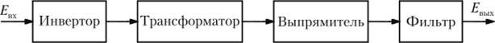

В общем случае преобразователь или конвертор напряжения это электротехническое
устройство, способное
преобразовывать один уровень или вид этого параметра в другой. Как правило,
говоря о
преобразователях напряжения, имеют в виду
конверторы, работающие в цепях переменного тока (AC/AC). В других случаях эти
приборы называют
преобразователями постоянного напряжения (DC/DC) или инверторами (DC/AC или
AC/DC). Устройства
для преобразования напряжения встречаются
на практике повсеместно. Различают и классифицируют их по различным признакам.
По назначению
конверторы подразделяют на: Преобразователи постоянного напряжения, а именно:
регуляторы;
линейные стабилизаторы.
Конверторы переменного напряжения. В состав этой категории входят
трансформаторы различных типов;
регуляторы;
преобразователи формы и частоты сигнала.
Структурная схема конверторов.
 С помощью этой схемы можно представить
себе конвертора с
самовозбуждением. Преобразователь ПС превращает постоянного напряжение в переменное
напряжение
прямугольной формы, которое с помощью
трансформатора изменяется до требуемого значения. После выпрямление выпрямителем В
оно подается на
сглаживающий фильтр , к выходу которого подключена нагрузка. В этом конверторе
работа всех блоков
кроме пребразователя с самовозбуждением,
рассматривалась ранее. В качестве ключей применяются транзисторы, включаемые
по двухтактной
схеме.
Современные конверторы могут иметь несколько выходов с разными номиналами
напряжений и
содержать ряд вспомогательных устройств, предназначенных для стабилизации,
регулировки, защиты и
других функций. Широкое применение конверторов
обусловлено наличием мобильных устройств и аппаратов с автономными первичными
источниками постоянного
напряжения (аккумуляторы, гальванические элементы, солнечные батареи и др.).
Импульсные преобразователи.
Импульсные преобразователи применяются в тех случаях, когда нужно преобразовать один
уровень
напряжения в другой. Чаще всего они собираются на базе индуктивных или емкостных
накопителей энергии.
От других источников электропитания их отличает высокий
уровень КПД, достигающий в некоторых случаях 95%. Принципиальные электрические
схемы импульсных
преобразователей выполняются с использованием 4 х элементов:
коммутирующий элемент;
накопитель энергии (катушка индуктивности, дроссель, конденсаторы);
блокирующий диод;
конденсатор, соединенный параллельно с сопротивлением нагрузки.
Комбинации перечисленных компонентов могут образовывать любой тип импульсного
конвертора.
Величина напряжения на выходе определяется шириной импульсов, управляющих
коммутирующим элементом. При
этом создается запас энергии в катушке
индуктивности. Стабилизация реализуется за счет обратной связи, то есть ширина
импульсов меняется в
зависимости от значения выходного напряжения. Для создания токов высокой
частоты используют
преобразователи, собранные с использованием
колебательных контуров. При этом напряжение постоянного тока, поступающее на
генератор переменного
напряжения (мультивибратор, триггер) является одновременно и питающим. Выходные
импульсы имеют, как
правило, прямоугольную форму. Полученное переменное напряжение можно усилить,
понизить и т. д.
Кроме того его легко выпрямить и получить нужную полярность. Для этого используют
соответствующее
включение диодов, а выпрямитель собирают, например, по мостовой схеме.
Напряжение на выходе
импульсных преобразователей необходимо стабилизировать. Для этого используют
различного рода
стабилизаторы (импульсные
или
линейные). Правда, из-за низкого КПД последние используются редко. Что
касается импульсных
стабилизаторов, то они в своей работе используют
широтно или частотно импульсную модуляцию. В первом случае меняется длительность во
втором — частота
импульсов. Встречаются устройства с комбинированным способом стабилизации.